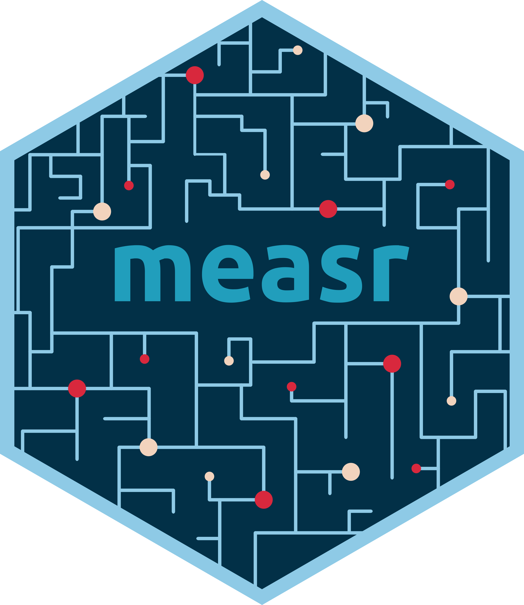
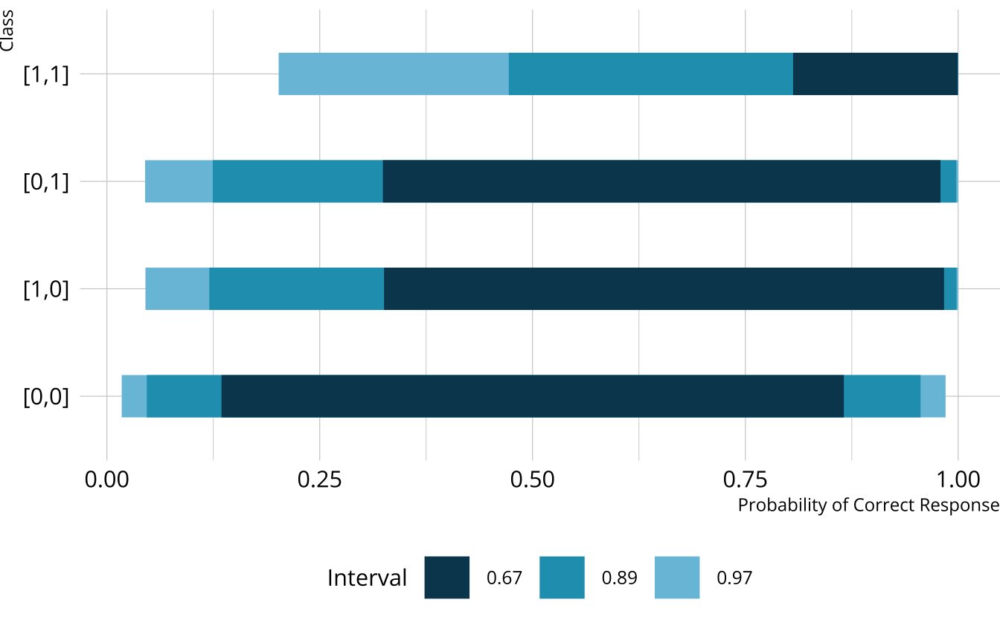

library(dcmdata)
ecpe_data
#> # A tibble: 2,922 × 29
#> resp_id E1 E2 E3 E4 E5 E6 E7 E8 E9 E10 E11
#> <int> <int> <int> <int> <int> <int> <int> <int> <int> <int> <int> <int>
#> 1 1 1 1 1 0 1 1 1 1 1 1 1
#> 2 2 1 1 1 1 1 1 1 1 1 1 1
#> 3 3 1 1 1 1 1 1 0 1 1 1 1
#> 4 4 1 1 1 1 1 1 1 1 1 1 1
#> 5 5 1 1 1 1 1 1 1 1 1 1 1
#> 6 6 1 1 1 1 1 1 1 1 1 1 1
#> 7 7 1 1 1 1 1 1 1 1 1 1 1
#> 8 8 0 1 1 1 1 1 0 1 1 1 0
#> 9 9 1 1 1 1 1 1 1 1 1 1 1
#> 10 10 1 1 1 1 0 0 1 1 1 1 1
#> # ℹ 2,912 more rows
#> # ℹ 17 more variables: E12 <int>, E13 <int>, E14 <int>, E15 <int>, E16 <int>,
#> # E17 <int>, E18 <int>, E19 <int>, E20 <int>, E21 <int>, E22 <int>,
#> # E23 <int>, E24 <int>, E25 <int>, E26 <int>, E27 <int>, E28 <int>Estimating diagnostic
classification models
With Stan and measr
W. Jake Thompson, Ph.D.
Example data
Data for examples
- Examination for the certificate of proficiency in English (ECPE; Templin & Hoffman, 2013)
- 28 items measuring 3 total attributes
- 2,922 respondents
- 3 attributes
- Morphosyntactic rules
- Cohesive rules
- Lexical rules
ECPE data
ECPE Q-matrix
Data for exercises
- Rapid online assessment of reading and phonological awareness (ROAR-PA; Gijbels et al., 2024)
Exercise 1
- Download the exercise files
Open
estimation.RmdRun the
setupchunkExplore the ROAR-PA data and Q-matrix
- How many items are in the data?
- How many respondents are in the data?
- How many attributes are measured?
roarpa_data
#> # A tibble: 222 × 58
#> id fsm_01 fsm_04 fsm_05 fsm_06 fsm_07 fsm_08 fsm_10 fsm_11 fsm_12 fsm_14
#> <int> <int> <int> <int> <int> <int> <int> <int> <int> <int> <int>
#> 1 161 0 1 1 1 1 0 0 1 1 1
#> 2 226 0 1 0 1 0 0 1 0 1 0
#> 3 103 0 1 0 1 0 0 0 0 0 0
#> 4 7 1 1 0 0 1 0 0 0 1 1
#> 5 185 1 1 1 1 1 1 1 1 1 1
#> 6 36 1 1 1 1 1 1 1 1 1 1
#> 7 206 1 1 1 1 1 1 1 1 1 1
#> 8 115 1 1 1 1 1 1 1 1 1 1
#> 9 106 1 1 1 1 1 1 1 1 1 1
#> 10 205 1 1 1 1 0 0 1 1 1 1
#> # ℹ 212 more rows
#> # ℹ 47 more variables: fsm_15 <int>, fsm_16 <int>, fsm_17 <int>, fsm_18 <int>,
#> # fsm_21 <int>, fsm_22 <int>, fsm_23 <int>, fsm_24 <int>, fsm_25 <int>,
#> # lsm_01 <int>, lsm_02 <int>, lsm_04 <int>, lsm_05 <int>, lsm_06 <int>,
#> # lsm_07 <int>, lsm_08 <int>, lsm_10 <int>, lsm_11 <int>, lsm_13 <int>,
#> # lsm_15 <int>, lsm_16 <int>, lsm_17 <int>, lsm_18 <int>, lsm_19 <int>,
#> # lsm_20 <int>, lsm_21 <int>, lsm_22 <int>, lsm_24 <int>, del_01 <int>, …- 57 items
- 222 respondents
- 57 items
- 3 attributes
- First sound matching (
fsm) - Last sound matching (
lsm) - Deletion (
del)
- First sound matching (
Estimation options
Existing software
Software Programs
- Mplus, flexMIRT, mdltm
- Limitations
- Tedious to implement, expensive, limited licenses, etc.
R Packages
- CDM, GDINA, mirt, blatant
- Limitations
- Limited to constrained DCMs, under-documented
- Different packages have different functionality, and don’t talk to each other
DCMs with Stan
- Stan is free and open-source
- Existing documentation for implementing DCMs
- Access to other packages in the Stan ecosystem

Limitations of Stan for DCMs
Very tedious—prone to typos
Complexity increases with the number of attributes and item structure
Stan code must be customized to each particular Q-matrix
Just need to automate the creation of the Stan scripts…

What is measr?
Model specification
Specify a DCM with dcm_specify()
Model estimation
Estimate a DCM with dcm_estimate()
- 1
- Define your model specification
- 2
- Specify your data and ID column (if present)
- 3
- Choose your estimation method and backend
- 4
- Pass additional arguments to the backend
- 5
- Save the model for future efficiency
dcm_estimate() options
method: How to estimate the model- Full posterior sampling with “mcmc”
- Quicker, but more limited “optim”
- Posterior approximation with “variational” (default) or “pathfinder”
- Variational inference does not always converge
- Pathfinder is only available for the cmdstanr backend
...: Additional arguments that are passed to, depending on themethodandbackend
Exercise 2
- Estimate an LCDM on the ROAR-PA data using variational inference.
- Use rstan for the backend
- Use seed:
19891213
Extracting item parameters
measr_extract() can be used to pull out components of an estimated model.
measr_extract(ecpe_lcdm, "item_param")
#> # A tibble: 74 × 5
#> item_id type attributes coefficient estimate
#> <chr> <chr> <chr> <chr> <rvar[1d]>
#> 1 E1 intercept <NA> l1_0 0.82 ± 0.043
#> 2 E1 maineffect morphosyntactic l1_11 0.71 ± 0.035
#> 3 E1 maineffect cohesive l1_12 0.65 ± 0.025
#> 4 E1 interaction morphosyntactic__cohesive l1_212 0.60 ± 0.084
#> 5 E2 intercept <NA> l2_0 1.05 ± 0.028
#> 6 E2 maineffect cohesive l2_12 1.24 ± 0.045
#> 7 E3 intercept <NA> l3_0 -0.51 ± 0.069
#> 8 E3 maineffect morphosyntactic l3_11 0.84 ± 0.092
#> 9 E3 maineffect lexical l3_13 0.41 ± 0.018
#> 10 E3 interaction morphosyntactic__lexical l3_213 0.40 ± 0.108
#> # ℹ 64 more rowsExtracting structural parameters
measr_extract(ecpe_lcdm, "strc_param")
#> # A tibble: 8 × 5
#> class morphosyntactic cohesive lexical estimate
#> <chr> <int> <int> <int> <rvar[1d]>
#> 1 [0,0,0] 0 0 0 0.291 ± 0.00588
#> 2 [1,0,0] 1 0 0 0.018 ± 0.00198
#> 3 [0,1,0] 0 1 0 0.020 ± 0.00117
#> 4 [0,0,1] 0 0 1 0.133 ± 0.00517
#> 5 [1,1,0] 1 1 0 0.015 ± 0.00253
#> 6 [1,0,1] 1 0 1 0.020 ± 0.00097
#> 7 [0,1,1] 0 1 1 0.154 ± 0.00909
#> 8 [1,1,1] 1 1 1 0.350 ± 0.00487Extracting respondent probabilities
measr_extract(ecpe_lcdm, "attribute_prob")
#> # A tibble: 2,922 × 4
#> resp_id morphosyntactic cohesive lexical
#> <chr> <dbl> <dbl> <dbl>
#> 1 1 0.997 0.951 1.000
#> 2 2 0.995 0.866 1.000
#> 3 3 0.976 0.987 1.000
#> 4 4 0.998 0.990 1.000
#> 5 5 0.990 0.979 0.944
#> 6 6 0.993 0.989 1.000
#> 7 7 0.993 0.989 1.000
#> 8 8 0.00208 0.403 0.973
#> 9 9 0.953 0.984 0.998
#> 10 10 0.701 0.0932 0.0847
#> # ℹ 2,912 more rowsExercise 3
What proportion of respondents have mastered both first and last sound matching in the ROAR-PA data?
What is the probability that respondent 153 has mastered deletion?
measr_extract(roarpa_lcdm, "strc_param")
#> # A tibble: 8 × 5
#> class lsm del fsm estimate
#> <chr> <int> <int> <int> <rvar[1d]>
#> 1 [0,0,0] 0 0 0 0.158 ± 0.0269
#> 2 [1,0,0] 1 0 0 0.011 ± 0.0083
#> 3 [0,1,0] 0 1 0 0.047 ± 0.0169
#> 4 [0,0,1] 0 0 1 0.059 ± 0.0198
#> 5 [1,1,0] 1 1 0 0.037 ± 0.0151
#> 6 [1,0,1] 1 0 1 0.042 ± 0.0162
#> 7 [0,1,1] 0 1 1 0.099 ± 0.0228
#> 8 [1,1,1] 1 1 1 0.546 ± 0.0400
measr_extract(roarpa_lcdm, "strc_param") |>
filter(fsm == 1, lsm == 1) |>
summarize(estimate = rvar_sum(estimate))
#> # A tibble: 1 × 1
#> estimate
#> <rvar[1d]>
#> 1 0.59 ± 0.039Priors
Default priors
default_dcm_priors(
measurement_model = lcdm(),
structural_model = unconstrained()
)
#> # A tibble: 4 × 3
#> type coefficient prior
#> <chr> <chr> <chr>
#> 1 intercept <NA> normal(0, 2)
#> 2 maineffect <NA> lognormal(0, 1)
#> 3 interaction <NA> normal(0, 2)
#> 4 structural Vc dirichlet(rep_vector(1, C))Weakly informative priors

Creating custom priors
Specifying custom priors
new_spec
#> A loglinear cognitive diagnostic model (LCDM) measuring 3 attributes with 28
#> items.
#>
#> ℹ Attributes:
#> • "morphosyntactic" (13 items)
#> • "cohesive" (6 items)
#> • "lexical" (18 items)
#>
#> ℹ Attribute structure:
#> Unconstrained
#>
#> ℹ Prior distributions:
#> intercept ~ normal(-1, 1)
#> maineffect ~ lognormal(0, 5)
#> interaction ~ normal(0, 2)
#> `Vc` ~ dirichlet(1, 1, 1)Extract priors
Exercise 4
Estimate a new LCDM model for the ROAR-PA data with the following priors:
- Intercepts:
normal(-1, 2)- Except item 3, which should use a
normal(0, 1)prior
- Except item 3, which should use a
- Main effects:
lognormal(0, 1)
Use backend = "optim" for a speedier estimation
Extract the prior to see that the specifications were applied
new_roarpa <- dcm_estimate(
dcm_spec = dcm_specify(
qmatrix = roarpa_qmatrix,
identifier = "item",
measurement_model = lcdm(),
priors = c(
prior(normal(-1, 2), type = "intercept"),
prior(normal(0, 1), type = "intercept", coefficient = "l3_0"),
prior(lognormal(0, 1), type = "maineffect")
)
),
data = roarpa_data,
identifier = "id",
method = "optim",
backend = "rstan",
file = here("materials", "slides", "fits", "roarpa-new-prior")
)Estimating diagnostic classification models
With Stan and measr